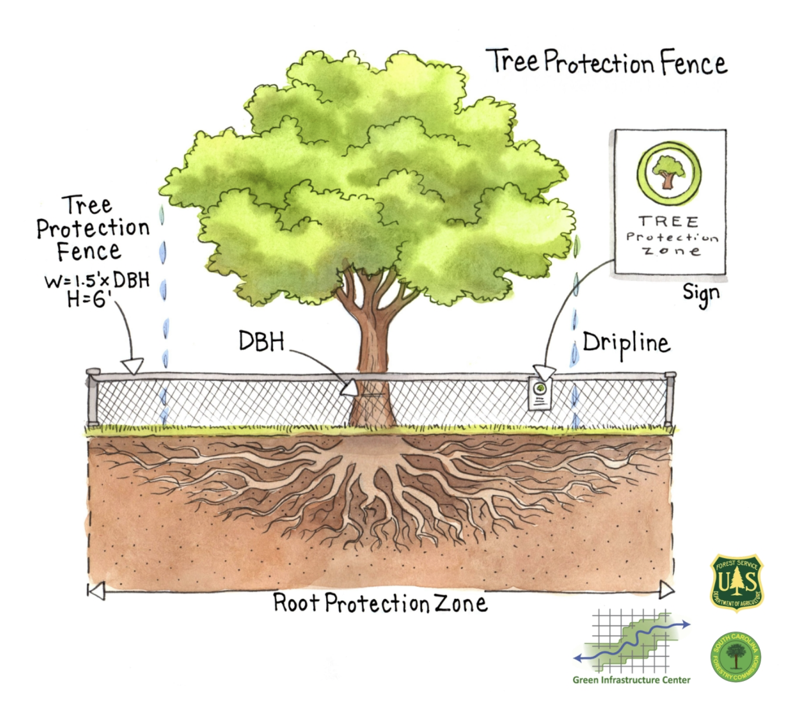

Tree Protection by South
Carolina Forestry Commission Tree Protection.
About Trees & Pre-Urbanization Planning
Urban development has a significant impact on trees, and it is crucial to understand this relationship to protect urban ecosystems and maintain tree health. Protecting trees benefits communities in several ways, including improving air quality, reducing the urban heat island effect, and providing habitat for wildlife. As urbanization continues to grow, the demand for land increases, leading to deforestation and a reduction of green spaces. This trend has significant implications on the environment and human health.
Trees play a vital role in mitigating these impacts, and it is essential to prioritize their protection in urban development plans. Understanding the impact of urban development on trees is crucial to ensure the long-term health and sustainability of urban ecosystems, and to ensure that communities can continue to benefit from the invaluable services that trees provide.